制作に必要な変化だけを。
制作に必要な内容を通常表示し、このチャットの全報告も切り替えて読めます。
表示する内容
「制作に必要な内容」は、作品づくりに直接役立つ掲載内容に絞ります。「すべての報告」では、このチャットが実施した改善を、内部仕様や検証も含めて表示します。
制作に必要な内容を表示中。0件。 見出しのみ1件。
同じ分岐規則から、開き方の違う模様を作る
共通の分岐規則から線分座標を作る補助ツールを追加しました。意匠帳の文章の具体化に加え、実際の線形状を構成できます。分かれ方の規則を保ち、回転角を変えて横への広がりが違う模様のラフを比較します。
しくみ・具体例・確認範囲を見る
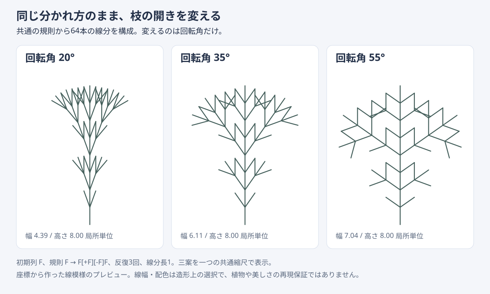
しくみ
形式言語理論・計算論的造形のL-system（Lindenmayer system）のうち、決定的・文脈自由の並列書換えD0Lと、2D turtleの幾何解釈を使います。各世代の記号を同時に置換し、その列を前進・回転・位置と向きの保存／復帰へ写します。新しく挿入した記号を同じ回で再置換したり、分岐から戻るときに線を引いたりしません。文字列を図へ写す手法で、図形内の部分形状を検出する形態文法とは異なります。今回の規則・回数・角度・線幅・配色は造形上の選択です。自然の成長や美しさを保証する科学法則として扱いません。
具体例
初期列F、規則F → F[+F][-F]F、反復3回、線分長1、初期位置(0,0)・上向きから、回転角20°・35°・55°の三案を作りました。三案とも同じ190記号・64線分で、最大の括弧階層は3です。幅は約4.39 / 6.11 / 7.04、高さは8.00局所単位。図は一つの共通縮尺で描き、個別の拡大で外形を揃えていません。交差や重なりは角度で変わるため、括弧の階層と画面上の接続を同一視しません。図は実際に構成したベクトル座標のプレビューで、B画像生成の実行結果ではありません。
確認範囲
基底14章・拡張11章・143規則の静的検査、337件のテストが通過しました。タートルを使わない独立した再帰的な図形合成と42条件・9,555線分を照合し、説明図の192線分を三案の座標へ対応させました。
制約：線の一致・交差・部分形状の検出、対象への自動配置、幅・先細り・素材・陰影、植物の生理や物理的な接続・支持は計算しません。反復回数はアルゴリズムの段階で、世界内の時間ではありません。既存の模様や形に自由度があるときだけ使い、固定された数・角度・材質を保ちます。座標資料は完全なB設計へ統合するための入力で、別の実行promptではありません。実画像での模様の残り方・系列の読取り・美的効果は未確認です。
GitHubの変更
空気遠近法の減衰と散乱加算を構成する
既存媒体で、表面から届く光の減衰と、媒体中から視線へ加わる散乱光を組み合わせる任意の設計方法を追加しました。遠くの対象を一律に暗くする処理と分け、媒体・照明・実光路に応じた明暗の関係を記述します。
しくみ・具体例・確認範囲を見る
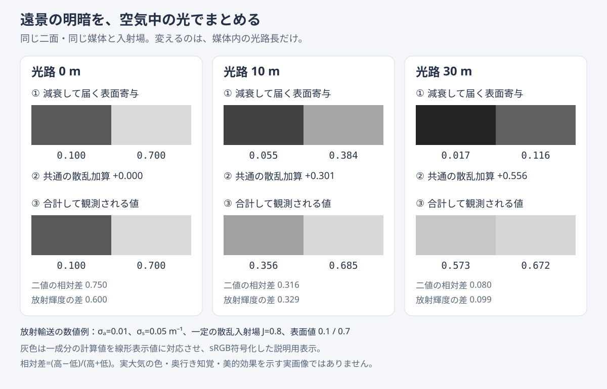
しくみ
放射測定・幾何光学・コンピュータグラフィックスの定常放射輸送方程式を用います。消散によるBeer–Lambert形の減衰と、経路上で視線へ入る散乱光の積分を合わせます。今回の数値例では、非発光・均質媒体と、光路に沿って一定の散乱入射場Jを仮定し、L(d)=exp(−βd)L₀+[1−exp(−βd)](σₛ/β)Jとしました。β=σₐ+σₛ、係数はm⁻¹、dは媒体内の実光路長です。Jは規格化した位相関数で重み付けした入射放射輝度で、表面反射のcos因子を含みません。この仮定で表面値はA=(σₛ/β)Jへ近づくため、Aより暗い面は明るく、明るい面は暗くなります。係数・距離・二面の値は説明用の設計選択で、美の法則や実大気の測定値ではありません。
具体例
表面の二値0.1 / 0.7に対し、σₐ=0.01、σₛ=0.05 m⁻¹、J=0.8を共通にすると、光路10 mで観測値は約0.356 / 0.685、30 mで約0.573 / 0.672になります。図の上段は表面寄与だけ、下段は散乱加算を含む合計です。同じ光路の二面の絶対差は透過率倍になりますが、散乱加算がゼロなら二値の相対差は保たれます。差の低下だけを知覚上のコントラスト低下としません。図の灰色は一成分の値を線形表示値へ対応させ、sRGB符号化した教育用表示です。
確認範囲
基底14章・拡張11章・143規則の静的検査、324件のテストが通過しました。数値補助ツールは独立した80桁Decimal計算864件、6件の数値積分、不正入力30件と照合し、説明図の12色を同じ参照値から構成しました。
制約：数値参照は一般の照明場・多重散乱・密度変化・体積影を解くレンダラーではありません。実大気の分光色・生成画像・奥行き知覚・美的効果は未確認です。固定された媒体や光源を勝手に追加せず、世界内の輸送と表示DepthAirで同じ霞を重ねません。新しい必須schemaや別の実行promptは増やしていません。
GitHubの変更
意匠帳から対象別の制作資料を作る
意匠帳から対象別の制作資料を作る補助ツールに加え、共有する分岐模様を金属板の象嵌と布の織り模様へ対応させた、完全なB-3参考設計を追加しました。形の関係を共有し、素材ごとの反射条件を分けて記述しています。
しくみ・具体例・確認範囲を見る
しくみ
デザイン学・計算論的設計の形態文法（shape grammars）を参考に、形と空間的な関係を複数の既存模様へ展開します。解析幾何・CGの剛体変換と正投影で、同じ局所形状を逆向きに配置し画面へ対応させます。金属地には幾何光学・CGのマイクロファセットBRDF（GGX分布、height-correlated Smith、SchlickのFresnel近似）、象嵌と布にはLambertの拡散反射モデル（ρ/π）を選びました。素材の反射を一律に揃えず、同じ模様と異なる素材応答を設計内で両立させます。分岐位置60%、幅3対1、末尾20%のテーパーと材料RGB値は、この例の設計選択です。学術研究が示す美の法則や実測物性値ではありません。
具体例
左の金属板では上向きの模様、右の布片では同じ模様を180度回転した下向きの模様にします。主線と枝は名目12画素・4画素ですが、提案した織りの手掛かりは0.8画素のため、実画像では失われる可能性があります。制作資料から形状・配置・色の役割・素材別の応答を一つの完全な設計へ対応させた参考例です。
確認範囲
基底14章・拡張11章・143規則の静的検査と、統合例の6件を含む313件のテストが通過しました。分岐比・幅比・テーパー、二方向の座標変換と正投影、試料内への模様の収まり、素材パラメータの分離を検査しています。先行する補助ツールでは二つの実入力の文章具体化を確認済みです。
制約：補助ツールは形状認識・幾何文法エンジンやB設計への自動統合ではありません。参考設計は未描画で、レンダラーの実行、系列の読取り、素材感、美的効果は確認していません。布の反射は光沢・繊維透過・多重散乱を省いた近似です。
GitHubの変更
青系の魔法光帯を、細線・発光の塊・整った反復へ描き分けました。好みに近い見本を選び、次の制作で残したい特徴を具体的に伝えられます。
繊細 — 細い線と暗い隙間
細い線をほどき、暗い隙間を広く残す。軽さや張りつめた印象を狙うときの見本。
重厚 — つながった発光の塊
発光面をつなぎ、大きな明るい塊にする。線より面の力を見せたいときの見本。
荘厳 — 主線と従線の反復
主線と従線を平行に整え、線の反復を揃える。秩序や儀式的な印象を狙うときの見本。
できること
「繊細」「重厚」「荘厳」という言葉だけでなく、線の細さ、明るい面のまとまり、線の間隔を見て、魔法の描き方を選べます。
使い方
たとえば「重厚を基準に、荘厳の平行線の整い方を加えて」のように、見本名と使いたい特徴を指定します。画像を押すと元の大きさで確認できます。
しくみ・具体例・確認範囲を見る
しくみ
学問上の参考は、デザイン学・計算論的設計の形態文法です。形と空間的な関係を規則として扱い、異なる構成へ展開する考え方を参照しています。この三作例では青系と縦のSカーブという主題を共有し、内部を細い線と暗い隙間、つながった発光面、主線と従線の反復へ描き分けました。形態文法の幾何エンジンを実行したものではなく、三つの描き分けと印象名は制作上の設計選択です。「繊細」「重厚」「荘厳」になることを保証する科学法則ではありません。
確認範囲
このチャットで三枚を生成し、線・面・反復の違いを実画像で確認しました。独立した生成なので曲線や明るさ、余白は完全には揃っていません。帯外のにじみも残り、当初の表示条件をすべて再現した成功例ではありません。描き方を選ぶ作例として掲載しています。
吸収光路の長さと内部透過率
既存の吸収媒体で、材質の吸収特性を保ちながら、許された光路長や厚みの候補を選べる。内部を進む光を何割残したいかが決まっていれば、その目標から必要な長さを逆算する方法も追加した。
しくみ・具体例・確認範囲を見る
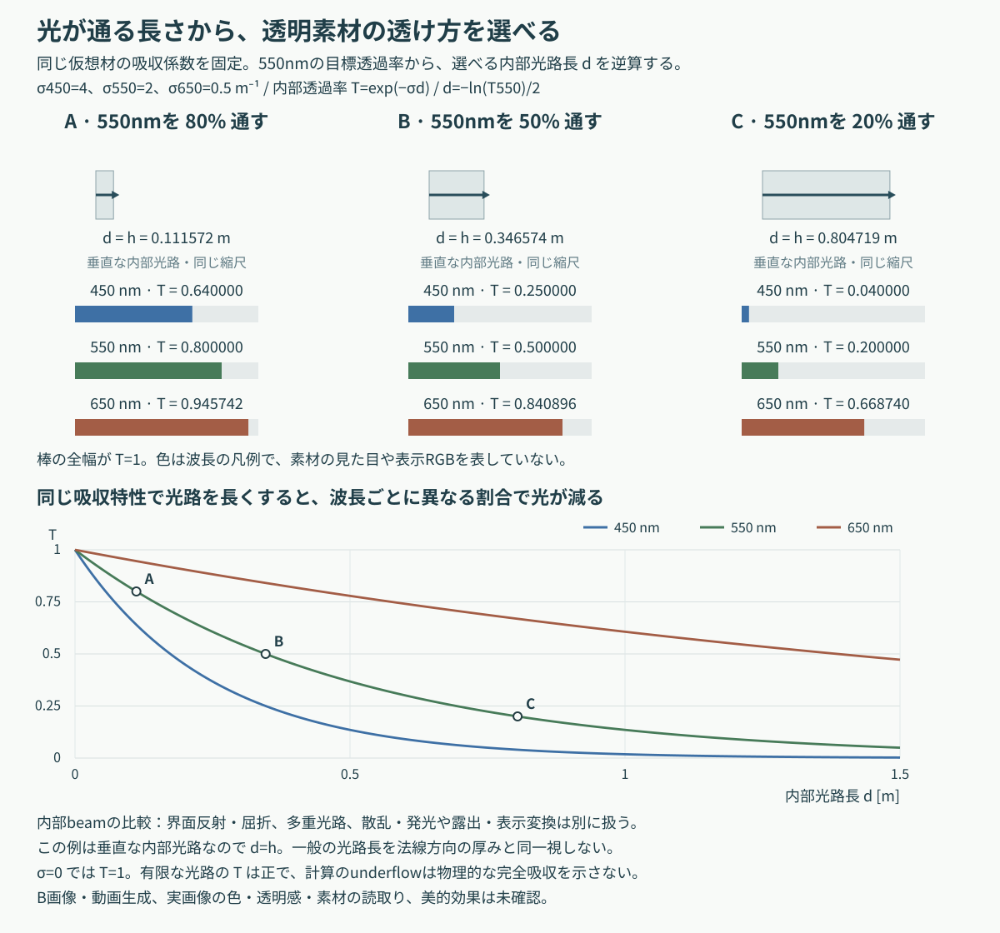
しくみ
均質な吸収媒体では、同じ長さを進むたびに光が一定の割合で減る。残る割合は吸収係数と実際の光路長の積で決まる。係数を固定すると、目標の内部透過率から光路長を求められ、別の波長の透過率も同じ経路から決まる。
具体例
説明用の仮想材で、450・550・650nmの吸収係数を4・2・0.5毎メートルに固定する。550nmの内部透過率を80%・50%・20%にする光路長は約11.16・34.66・80.47cm。50%の案では450nmが25%、650nmが約84.09%残る。垂直な内部光線の例なので光路長と法線方向の厚みは等しい。
確認範囲
当該改善時の記録：70桁の独立数値計算で9つの標本透過率、3つの逆算長、903曲線点、36組の区間透過率の積、9つの単位換算を照合した。不正な入力の拒否、ゼロ吸収での逆算の非一意・不達、8種類の破損データの拒否も確認した。説明図の3経路・9本のバー・3目標点と曲線を照合し、1200×1120画像を画素検査と目視で確認。仕様143規則と既存295テストが通過した。
制約：均質・非発光・非散乱の吸収経路の内部透過率に限る。3波長の標本値は表示RGBや素材の見た目ではなく、界面反射・屈折、多重光路、散乱・発光、露出・表示変換を含む全体の透け方とは区別する。斜めの実光路と法線厚みを混同せず、固定された材質・色・形・接触・源を優先する。実材係数の測定、B画像・動画生成、実画像の色・透明感・美的効果は未確認。
GitHubの変更
方向別の粗さと反射の構成
既存の反射モデルで、方向ごとの粗さと表面上の向きを選び、反射がどちらへ広がるかを設計できる。異方性自体は既存知識で、今回は選び方の具体例を増やした。
しくみ・具体例・確認範囲を見る
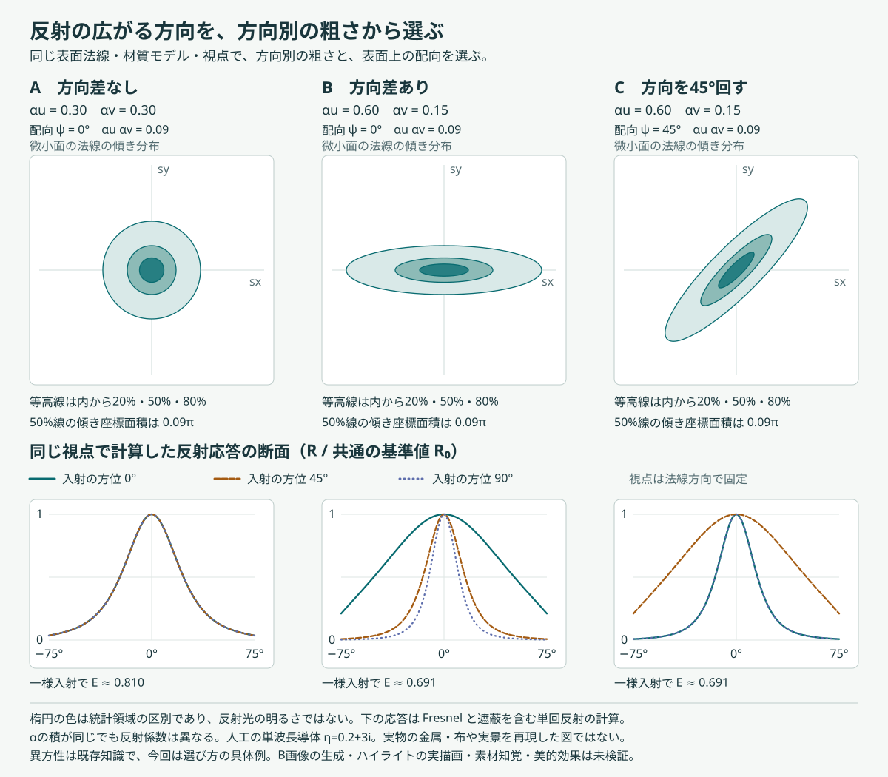
しくみ
表面を非常に小さな面の集まりとして扱うと、その面が向く方向の偏りが反射の方向性に関わる。縦横の粗さを表す係数を分け、その軸を回すことで、広がり方の候補を作る。ハイライトを白い帯として足す操作ではなく、選んだ表面モデルと視点から応答を計算する。
具体例
同じ表面・材質モデル・視点で、係数が0.30と0.30のA、0.60と0.15のB、Bの軸を45°回したCを比べる。係数の積は全て0.09だが、分布は円形・横長・斜めへと変わる。今回の法線視点・一様入射で応答を積分した値EはAが約0.810、B/Cが約0.691で、積を保っても反射量まで同じにはならない。
確認範囲
当該改善時の記録：独立計算で1,359点の角度応答、分布と面の傾きの関係、入射と観測方向を入れ替えた関係、軸の回転を照合した。積分も三段階の求積で安定することを確認。説明図の形状と全曲線の値を照合し、各案の描画を画素検査と目視で確認した。図は1200×1050。仕様は143規則、既存295テストが通過し、配布検証器と単一の参考設計コードは変更していない。
制約：上の楕円は微小な面の傾きの統計で、画像上のハイライトや反射エネルギーの割合ではない。計算は人工の単一波長導体と単回反射モデルに限る。法線視点での積分安定は、全方向のエネルギー保存や実物の金属・布の再現を証明しない。固定された材質・方向・形・接触を優先し、全素材へ同じモデルを強制しない。B実画像・素材の読取り・美的効果は未確認。
GitHubの変更
面光源の条件と影境界の構成
既存の面光源の幅が未指定なら、その幅から影の輪郭、本影の有無、境界がぼける幅を設計できる。影を新設する機能ではなく、既にある光源と遮蔽物を使う具体的な選び方を増やした。
しくみ・具体例・確認範囲を見る
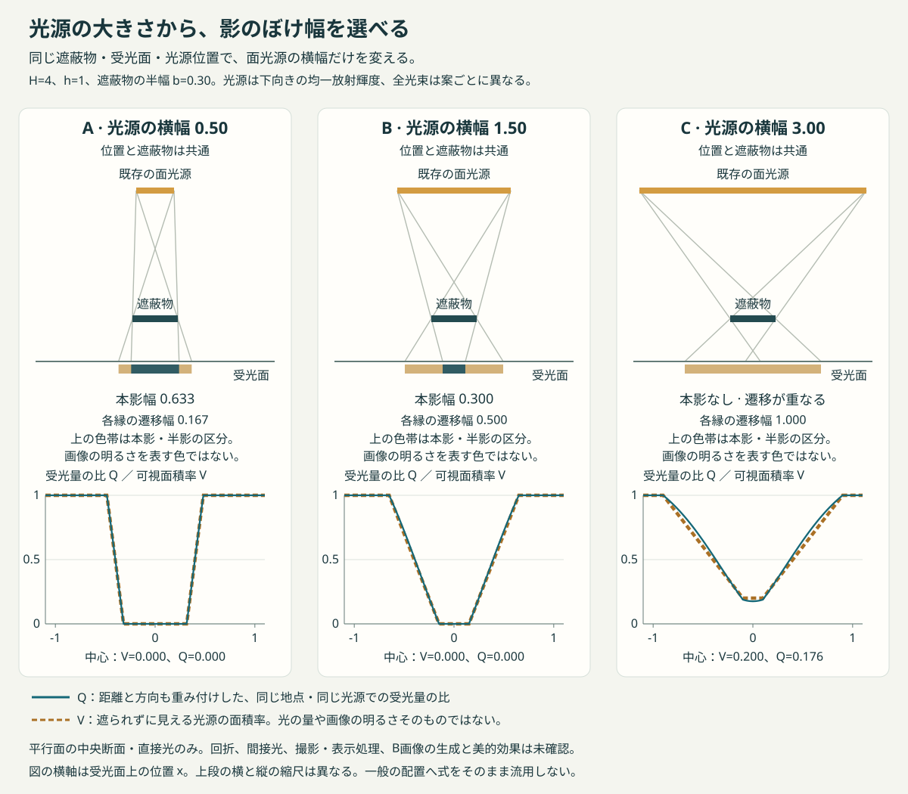
しくみ
面光源の各点から届く光は、受光面の場所ごとに遮られ方が違う。光源の端と遮蔽物の端を結ぶ光路から、完全に遮られる本影と、一部の光が届く半影の境界を求める。見える光源の面積率と、距離・方向を考えて重み付けした受光量は別々に計算する。
具体例
同じ位置の光源と同じ板で、光源の横幅だけを0.50、1.50、3.00へ変える。長さは全て同じ単位で、光源の高さ4、板の高さ1、板の横幅0.60とする。各縁の遷移幅は約0.167、0.500、1.000となり、最も広い案では半影が重なって本影がなくなる。この案の中心では可視光源面積率が20%、受光量の比が約17.6%になる。
確認範囲
当該改善時の記録：独立した二次元積分で1,323点の受光量と比を三段階の求積で照合し、影境界、左右対称性、有限な板の奥行き条件も確認した。説明図の全2,646曲線点と境界光路を照合し、1200×1050画像の描画を画素検査と目視で確認した。仕様143規則と既存295テストが通過。配布検証器と単一の参考設計コードは変更していない。
制約：平行な面の中央断面と直接光に限る。光源の放射輝度を固定して幅を変えるため、光源の総放射束と絶対受光量も変わる。比のグラフは最終画像の明るさではない。光源を変更したら他の照明・反射にも反映し、固定された光量・形・接触・材質を優先する。回折、間接光、撮影・表示処理、今回のB画像生成、影の読取りと美的効果は未確認。
GitHubの変更
OBSの描画段階の構造検査
OBS.stageを4正準値に限定し、未知値・空欄・不正型をOBS IDとともに診断する。
しくみ・具体例・確認範囲を見る
しくみ
B-3を検出したときだけ、OBS.stageの値を正準の4値と照合する。自由な文字列や不正な型を通さず、該当OBSのIDを診断に含めることで、修正する対象を特定できる。
具体例
pre_composite / world_render_observation / post_composite / displayを受理する。誤ったdirect_displayや空欄・数値などを、対象OBSを示して拒否する。B-2の従来の受入は保つ。
確認範囲
当該改善時の記録：4正準値の受理、不正値の拒否、複数OBSの診断、CLI、B-2互換を確認。新規6テストを含む291件が通過し、配布検証器にも反映した。
制約：語彙・構造検査であり、stageの物理的適合性や実画像品質は保証しない。
GitHubの変更
撮影距離と奥行きごとの倍率
被写体の基準になる平らな面を同じ大きさに写しながら、背景や手前の面との投影サイズの関係を選べる。既存の透視投影を使う具体的な構成例で、立体全体の輪郭や面積を一定にする機能ではない。
しくみ・具体例・確認範囲を見る
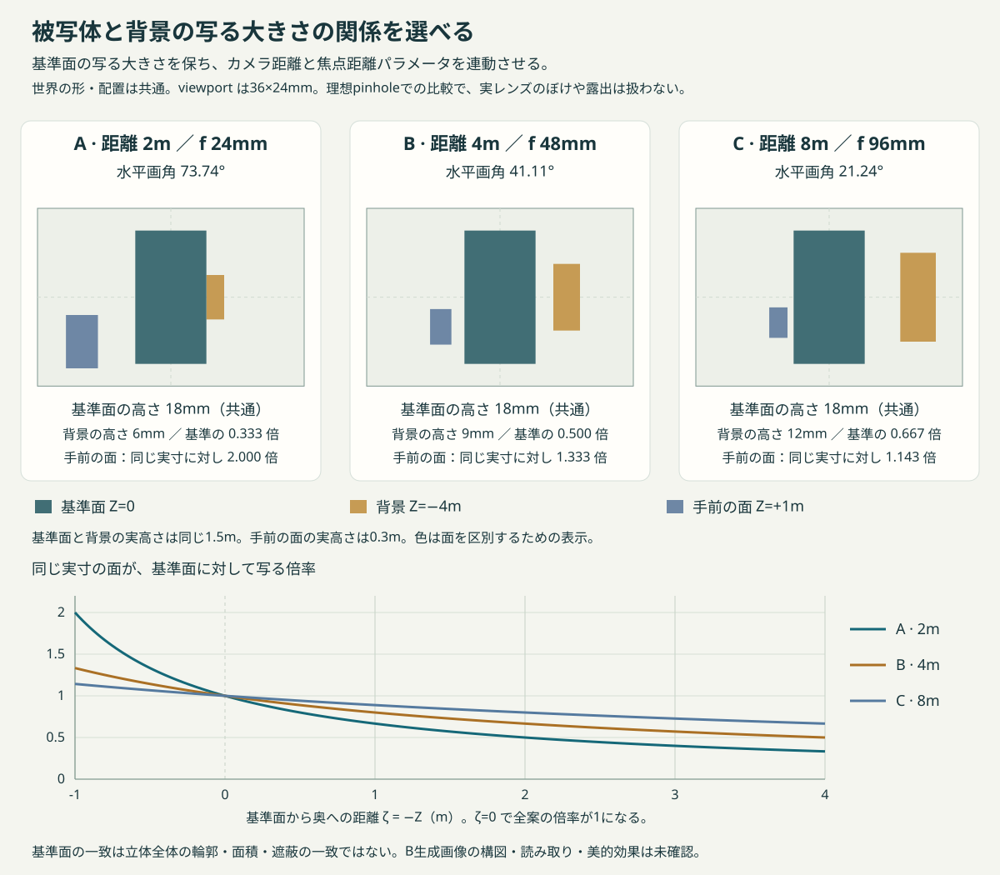
しくみ
カメラを遠ざける距離と焦点距離パラメータを同じ比率で増やすと、正面の基準面の投影倍率は保たれる。別の奥行きの面まではカメラからの距離が異なるため、基準面との倍率比が変わる。全ての面を一つの共通する投影で計算する。
具体例
理想カメラで、距離2mと24mm、4mと48mm、8mと96mmを比べる。画面範囲36×24mmを共通にすると、高さ1.5mの基準面はどれも18mmに写る。基準面の4m奥にある同じ高さの背景は6mm、9mm、12mmとなり、基準面に対する比は1/3、1/2、2/3へ変わる。
確認範囲
当該改善時の記録：画角から組み立てた独立の行列投影で1,716格子点と36面頂点を照合し、603点の奥行き別倍率、基準面の一致、画面境界、前方にない点の拒否も確認した。図の全9面と3曲線を数値・画素検査で照合し、1200×1050画像を目視した。仕様143規則と既存295テストが通過し、配布検証器と単一の参考設計コードは変更していない。
制約：この例は正面を向いた平行な面と理想ピンホールに限る。基準面以外の投影サイズ、立体全体の輪郭、画面外へのはみ出しや遮蔽は一定にならない。カメラ位置を固定して焦点距離だけを変えても、奥行きどうしの倍率比は変わらない。固定されたカメラ・画角・切出し・形状・接触を優先する。実レンズの合焦、ぼけ、歪曲、露出、B画像生成と動画、実画像の構図・読み取り・美的効果は未確認。
GitHubの変更
色の補間経路の比較
既存のグラデーションで両端の色と位置を固定し、中間色が未指定の区間だけ、補間色空間と色相の短経路・長経路を候補化する。
しくみ・具体例・確認範囲を見る
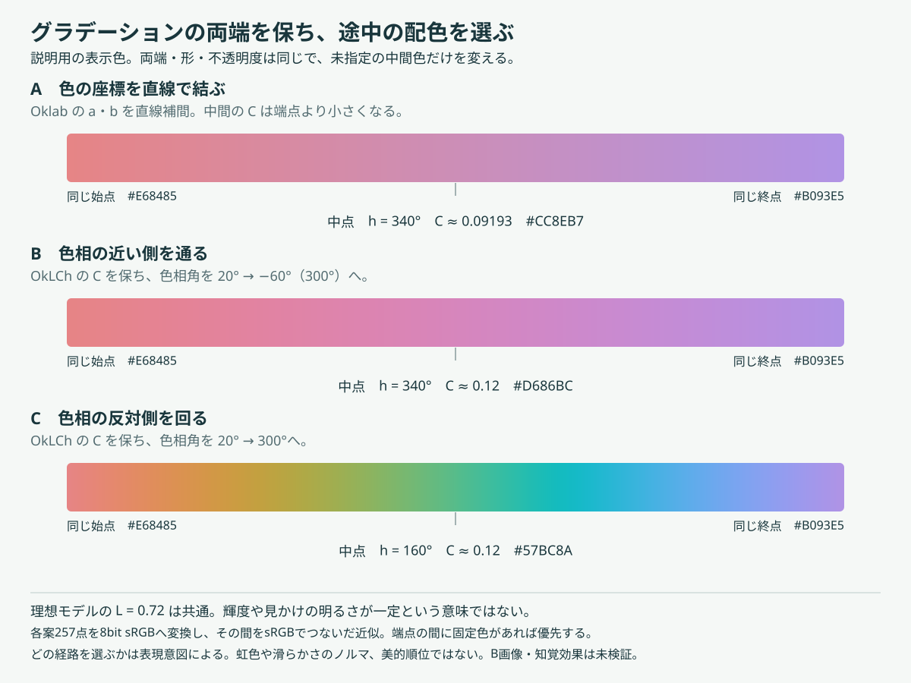
しくみ
色の座標を直線で結ぶか、色相の輪を近道・回り道で進むかによって、同じ端点でも中間色が変わる。前者はOklab、後者はOkLChで構成した。採用経路を既存のグラデーション・色・描画の指定へ結び、世界内の光や素材を混ぜる処理とは分ける。
具体例
不透明な既存display_artifactの例では、OKLCH(0.72, 0.12, 20°)から(0.72, 0.12, 300°)へ空間方向に進む。t=0.5でOKLab直線は#CC8EB7、OKLCH短経路は#D686BC、長経路は#57BC8Aとなり、全案の両端は#E68485と#B093E5で共通。固定アンカーや帯、材質、因果は変えない。
確認範囲
当該改善時の記録：独立計算で3経路の色サンプル771点を照合し、8bitの色値は全件一致した。説明図の771色・形・端点・中点と9か所の描画画素を含む29項目の検査を通過し、1200×900の図の文字・切れも目視した。統合後の仕様は143規則、既存295テストが通過。検証器の配布コードと単一の参考設計コードは変更していない。
制約：モデルのL一定は、輝度や見かけの明るさ一定を意味しない。図は各案257色を8bit sRGBへ変換してつないだ近似で、連続する理想経路全体の色域証明ではない。固定された中間色・帯・材質は優先する。特定経路の美的優位・知覚効果、今回のB画像生成は未確認。
GitHubの変更
輪郭の離れ・接し・重なりの比較
既存モチーフの輪郭関係を、離す・接する・重ねる候補として比較する手順を追加した。
しくみ・具体例・確認範囲を見る
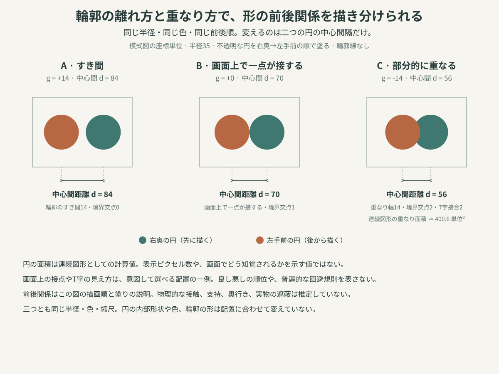
しくみ
投影上の関係と物理的な接触を分け、形・個数・必要な可視性を守って配置や許された視点を選ぶ。接線回避や隙間のノルマにはしない。
確認範囲
当該改善時に2円の位置・交点・描画順を数値と説明図で照合し、297件の回帰テストが通過した。合成図形の確認であり、実生成したB画像の読み取りや美的効果は未確認。
GitHubの変更
輪郭線の太さと先細りの構成
既存の輪郭線を役割ごとに選び、太さ・先細り・遷移を比較する任意の手順を追加した。
しくみ・具体例・確認範囲を見る
しくみ
形状そのものとインクの占有域を分ける。シルエット・接触・内側線の意味と、明示された画風・内部線禁止を保ち、均一線も選べる。
確認範囲
当該改善時に仕様・ガイドを照合し、297件の回帰テストが通過した。実生成画像、形の読み取り、美的効果は未確認。
GitHubの変更
輪郭の接続と連続性
2本の既存ベジェ曲線で、つなぎ目の位置だけでなく、接線や曲率の揃え方を選べる。
しくみ・具体例・確認範囲を見る
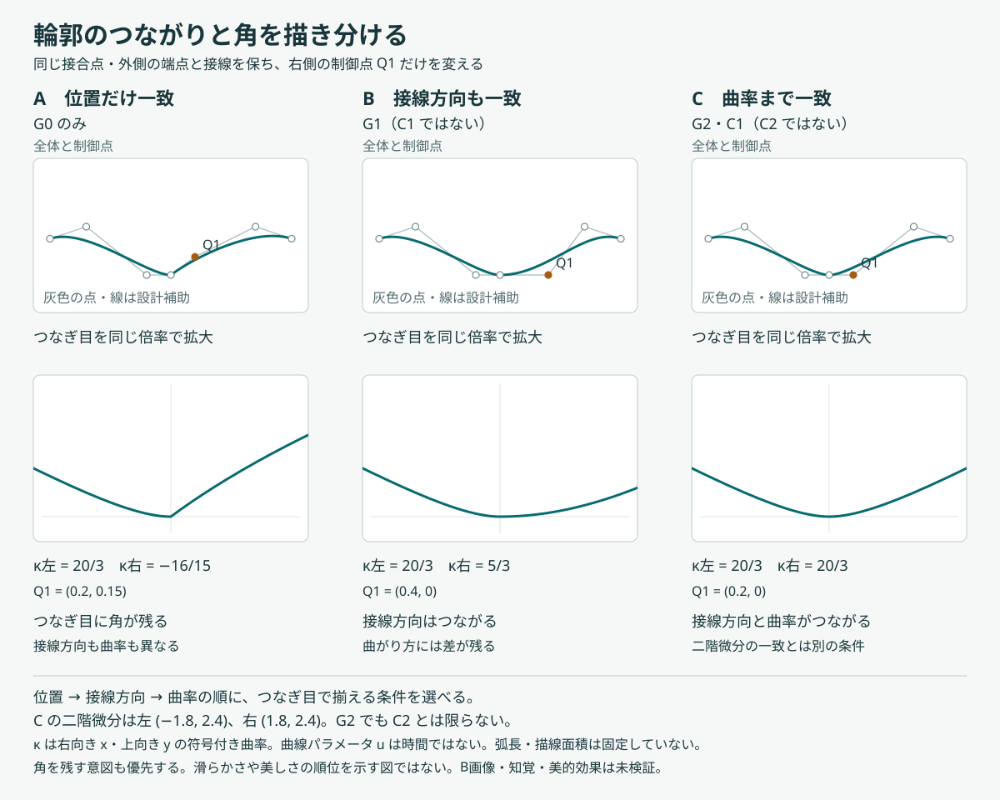
しくみ
つなぎ目に近い制御点の位置が端点の接線を決め、次の制御点を含む位置関係が曲がり方を決める。Q1だけを動かせば、位置だけをつなぐ案、接線を揃える案、接線と曲率まで揃える案を比べられる。幾何的な滑らかさと、曲線パラメータに対する微分の一致は分けて扱う。
具体例
平面上の2本の三次ベジェ曲線で、接合点(0,0)と両端を固定し、右曲線の最初の制御点Q1をA=(0.2,0.15)、B=(0.4,0)、C=(0.2,0)とする。Aは接線が折れ、位置だけがつながるG0。Bは接線方向が揃うG1だが、一階導関数は左(0.6,0)・右(1.2,0)でC1ではなく、曲率も左20/3・右5/3で異なる。Cは接線と曲率が左右20/3で揃うG2かつC1だが、二階導関数は左(-1.8,2.4)・右(1.8,2.4)で異なり、C2ではない。
確認範囲
当該改善時の記録：独立した分数計算で3案の接合位置・端点導関数・符号付き曲率・正則性を照合した。説明図の実際の制御点・曲線パス・拡大倍率など28項目の検査と1200×960の描画を確認し、日本語の文字や切れも目視した。仕様の静的検査（基底14章・拡張11章・143規則）と既存291テストが通過し、検証器の配布コードと単一の参考設計コードは変えていない。
制約：意図した角や既存形状の固定を優先し、滑らかさを必須にしない。これは平面上の曲線幾何の例であり、空間曲線・曲面・時間上の滑らかさへ一般化しない。Q1の変更で右曲線の他の部分や弧長も変わる。曲率の一致は美的優位を示さず、B画像の生成・形の読み取り・美的効果は未確認。
GitHubの変更
界面角度と反射・透過の構成
透明な素材の面ごとに、光を通す寄与と反射させる寄与の差を設計する方法を追加した。例えば、正面に近い面には透ける寄与を多く残し、斜めの面では既存の光を返す寄与を強める。指定された材質や形を保ち、光源・面・視点が許す未指定の光路条件だけを選ぶ。
しくみ・具体例・確認範囲を見る
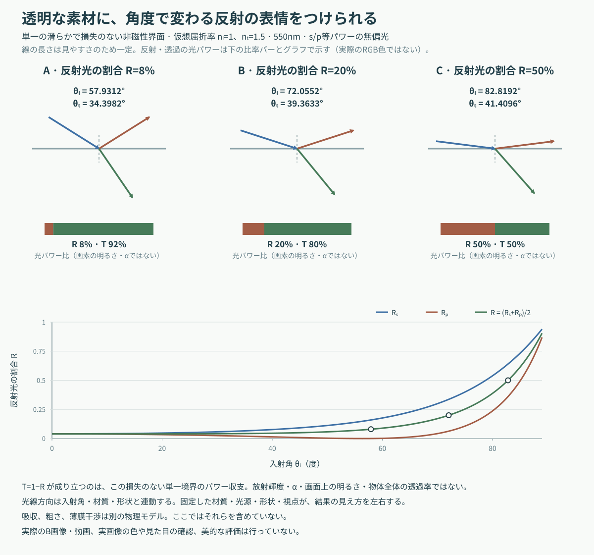
しくみ
光は屈折率の異なる面で反射と透過へ分かれ、その割合は角度や偏光で変わる。同じ屈折率を保ち、反射させたい割合を満たす角度を許された範囲で探す。反射光と屈折光の向きも同じ条件から定めるため、割合だけを別に変えない。
具体例
説明用の仮想条件として550nm、入射側屈折率1、透過側1.5を固定する。入射角約57.93°・72.06°・82.82°で、反射する光のパワーは8%・20%・50%、透過するパワーは92%・80%・50%となる。角度は面の法線から測る。この割合は単一界面のビームについての値で、画像の明るさではない。
確認範囲
当該改善時の記録：80桁の独立計算で3つの逆算候補、357点の角度別応答、360組の逆向き光路、7つの特殊条件を照合した。無次元量の差は最大2.58×10⁻¹³、角度差は最大1.86×10⁻¹²度。12種類の破損データと9種類の不正な定義域入力を拒否し、探索区間とflag型も検査した。図の9光線・6バー・1071曲線点・3目標点を照合し、1200×1120の説明図を画素検査と目視で確認した。統合後の仕様143規則と全297テストが通過した。
制約：滑らかで損失のない非磁性の単一界面と、等パワーのs/p偏光を合わせた入射に限る。仮想的な一波長の屈折率を使い、実素材の測定、粗面、薄膜干渉、内部吸収・散乱や多重光路を検証したものではない。ビームのパワー比を放射輝度比、alpha、最終RGB、物体全体の透明感へ代入しない。屈折率一致・全反射では角度が一意に決まらない場合があり、固定済みの幾何・光源・視点を優先する。B画像・動画生成、実画像での反射の見え・素材の読取り・美的効果は未確認。
GitHubの変更
輪郭線と補助線を選ぶ方法
外形・遮蔽境界、実際の稜線、滑らかな面の回り込みを区別し、必要な描線を選ぶ。
しくみ・具体例・確認範囲を見る
しくみ
線を増やす量ではなく、その線が何を伝えるかを選ぶ。外形、遮蔽、実際の折れと、滑らかな面の回り込みを分け、視点から見た形の変化を必要な区間だけ描線へ対応させる。
具体例
形状と視点を固定した陶器で、輪郭だけの案と肩の回り込みを示す短い形状線を加える案を比べ、滑面には線を置かない。
確認範囲
当該改善時の記録：陶器の固定形状・視点と、描線を選ぶ区間の意味をレビュー。仕様検査と当時の285件の回帰テストが通過。
制約：線は溝・縫い目・模様の追加ではなく、view-dependent線抽出を文章で計算済みとしない。形状読取りと美的効果は未確認。
GitHubの変更
形・色・輪郭・反復の構成手順
形状文法・周囲色・輪郭関係・期待変奏を、既存内容への具体的な選択として組み立てる。
しくみ・具体例・確認範囲を見る
しくみ
共通する形の特徴と許される変換を決めると、同一形への単純な統一を避けながら関連を作れる。色は隣接色との関係、輪郭は曲率や方向、反復は保つ規則と変える箇所から候補を作る。
具体例
既存の葉・花弁・ひだに共有される先細りを対象別に変え、指定色のガラス片では背景との関係を選ぶ。袖の接触とシルエットを保って曲率遷移を選び、既存の三窓反復では一つの幅を変える案を比べる。
確認範囲
当該改善時の記録：4つの規則に具体的な適用例を接続し、仕様の参照と構造検査を確認した。B画像での効果は未確認。
制約：いずれも既存内容の選択で、新規物体の追加許可ではない。DesignScience・心理学・色・衣装の基盤軸は既存baseline 7544dab由来で、当該改善での新規導入とは扱わない。B画像と美的効果は未確認。
GitHubの変更
余白と明暗を、切り替えて比べる
同じ三つの図形と各色の面積を保ち、余白が下へ狭まる配置と、暗い面がつながる配色を別々に切り替える比較ツールを追加しました。基準の構成と並べ、大きな表示と小さな表示で見比べられます。
余白と明暗を操作して比べる
しくみ・具体例・確認範囲を見る
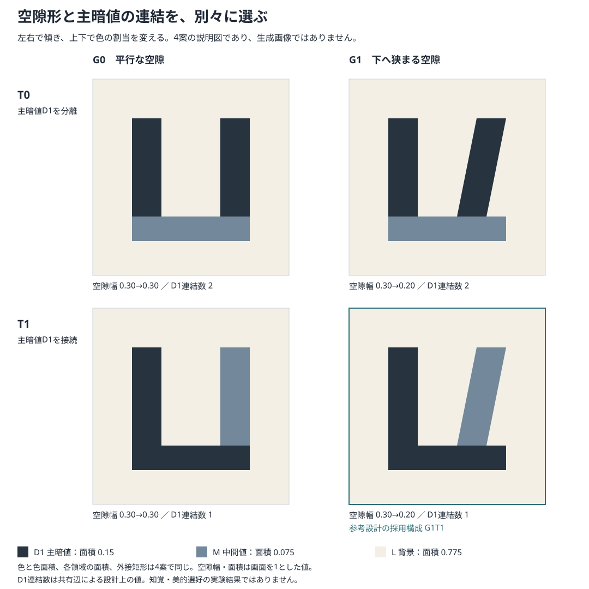
しくみ
美術教育・構成論のノータン（明暗の面の構成）を参考に、同じ構図の明暗割当を変えて比べます。Dowの『Composition』IX・X・XII章が扱う比較方法の転用です。余白の形には、平面幾何・線形代数の面積を保つせん断を使い、右領域の下側二頂点を同量だけ動かします。暗い面のつながりは、グラフ理論の連結成分として、同色領域が正の長さの辺を共有する場合に数えます。これらの計算と、人が知覚するまとまり・美的好みは別です。採用した比率や配色はこの例の設計判断です。
具体例
余白を一定幅に保ったまま暗い面をつなぐ比較、配色を保ったまま余白を先細りにする比較を、別々に試せます。各領域7.5%、暗い色15%、中間の色7.5%、背景77.5%は全四案で共通です。
確認範囲
先行する完全なB-3参考設計と四案の説明図を保持しています。新しいツールの採用形の頂点・色は、その設計JSONから抽出しました。全四案について独立した有理数計算で面積・外接範囲・空隙幅・暗色の連結数を照合し、ブラウザーで二つの操作を独立に切り替えた表示を確認しました。360 CSS px幅では横のはみ出しがなく、選択中の図を先に表示します。
確認の範囲：ネイティブSVGによる教育用プレビューです。128 CSS px表示は同じベクトル図形の再描画で、元画像を縮小フィルターへ通した結果ではありません。生成AIによるB画像、鑑賞者の知覚、美的効果は未確認です。操作は比較表示へ反映され、原本の採用案はG1/T1のままです。
GitHubの変更
素材の見えを構成する方法
反射ハイライトと陰影の整合、既存素材間の見えの差、薄い透過面越しの模様関係を選ぶ。
しくみ・具体例・確認範囲を見る
しくみ
素材の見えは、反射の形・陰影・表面模様などの組合せに依存する。既存の形と照明に対して、どの手掛かりを揃え、どの差を残すかを選ぶことで、素材ごとの役割を構成する。
具体例
既存サテンとマット布では折れ・ハイライトを素材役割に合わせ、同一の白縞を両方に足すだけの案を避ける。薄い半透明面が既存模様に重なる場合は、許された配置と模様の連続・ずれを選ぶ。
確認範囲
当該改善時の記録：素材ごとの手掛かりと保持条件をガイドへ具体化し、仕様検査と当時の285件の回帰テストが通過。
制約：画像から物理素材を推定せず、全素材を光沢・濡れた外観へ揃えない。限定的な知覚研究は普遍的な美的改善やB画像の証明ではない。
GitHubの変更
動作の時間配分を選ぶ方法
既存時間尺の中で経路r(s)と進行s(t)を分け、移動と保持の配分を選ぶ。
しくみ・具体例・確認範囲を見る
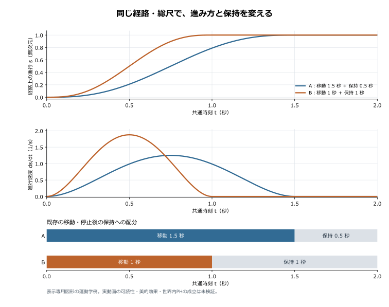
しくみ
空間の経路r(s)と時間に対する進行s(t)を分ける。進行に五次曲線Q(u)=10u³−15u⁴+6u⁵を使う例では、移動の始終端の速度と加速度をゼロにでき、停止区間へ滑らかにつなげられる。移動時間を変えても経路と総尺を保てる。
具体例
直線上を0から1へ進んで止まる既存図形を総尺2秒に保ち、移動1.5秒＋保持0.5秒と移動1秒＋保持1秒を比べる。
確認範囲
当該改善時の記録：曲線の境界条件と時間配分を数値確認し、進行・速度の説明図を描画して点検した。実動画は未生成。
制約：未宣言の動作を加えず、物理運動の時間変更時は力学・接触・応答を再評価する。動画と美的効果は未確認。
GitHubの変更
余白の形を比較する方法
既存境界が作る空隙について、幅の変化・開口方向・周囲への連続を許された配置から選ぶ。
しくみ・具体例・確認範囲を見る
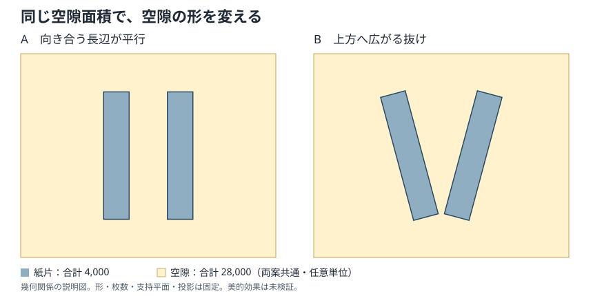
しくみ
空隙の輪郭は、隣り合う対象の境界が共同で作る。対象の面積を変えずに位置・角度を選ぶと、背景の総面積を保ちながら、抜けの先細りや開口方向を変えられる。
具体例
共通平面上の既存紙片2枚の形・支持・投影を固定し、ほぼ一定幅の抜けと下を狭く上へ開く抜けを比較する。空隙は外部へ開いた背景として保つ。
確認範囲
当該改善時の記録：教育図の2案で、各紙片の形・面積と総空隙面積を数値確認し、実際に描画した説明図を点検した。
制約：空隙は物理的な穴や新しい対象ではない。形・個数・接触・意図した平面性を保つ。図は知覚・美的好みの証明ではなく、B画像の効果は未確認。
GitHubの変更
模様の尺度と表示寸法の比較
同じ2色と色量比の模様周期を、想定表示寸法別に候補比較する。
しくみ・具体例・確認範囲を見る
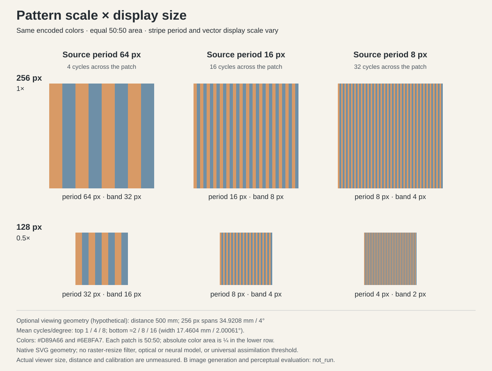
しくみ
同じ色値・色量比でも、境界の細かさと表示条件によって色の見えは変わりうる。模様の周期と表示寸法を組み合わせて候補を作り、色面の分離とまとまりを実寸で比較する。画素平均や眼・神経の作用を模擬する実装ではない。
具体例
橙と青灰を50:50にした256×256の縦縞で、元の周期64/16/8pxを比較する。128px表示へ同じベクトルを描き直すと周期32/8/4px、各帯幅16/4/2pxになる。表示用途に合う模様の分離・まとまりと可読性を選ぶ。
確認範囲
当該改善時の記録：6ケースの周期・帯幅・視角換算を独立計算で照合。説明図の全パッチが指定2色のみ・面積比50:50であることを画素検査した。当該版の仕様検査と291件の回帰テストも通過。
制約：実UIの物理寸法・視距離・色校正は未測定。細かいほど必ず同化するとは限らず、特定実験の周波数を万能閾値にしない。B画像、知覚上の色変化、美的好みは未確認。
GitHubの変更
反復列の整列と位置ずれ
既存要素の形・色・個数と行内周期を保ち、行ごとの水平位置を選んで、整列と互い違いの配置候補を作る。
しくみ・具体例・確認範囲を見る
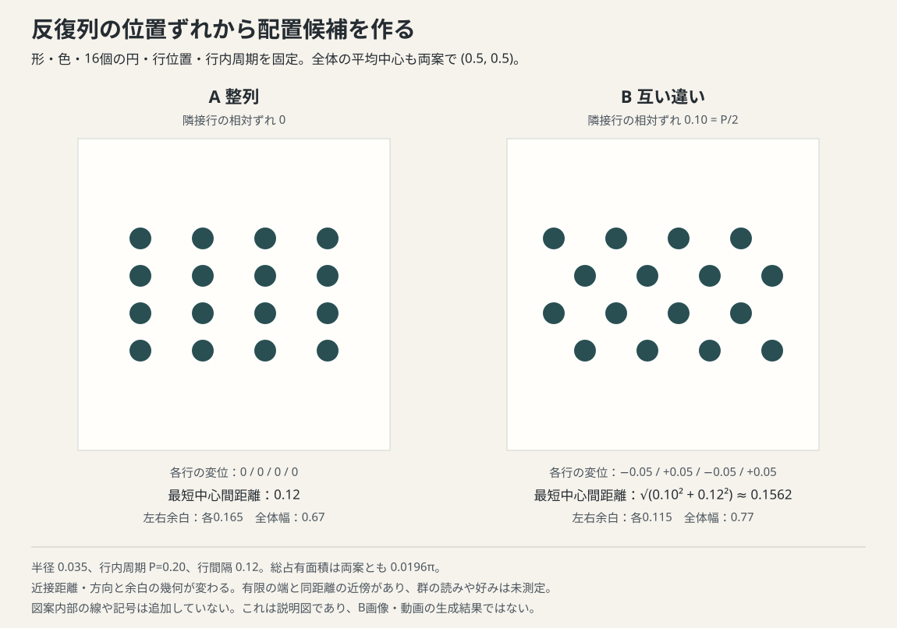
しくみ
一つの行をまとまりとして横へ移すと、行内の間隔を保ったまま、上下の行との距離や最も近い点の方向を変えられる。隣接行の相対ずれを周期の半分にした候補では、近接する候補の方向が縦から斜めへ変わる。幾何的な関係を選び、実際にどう群として見えるかを確認する。
具体例
画面上の4行に同色・半径0.035の円を各4個、行内周期0.20で並べる。Aは全行を同じ位置に置き、Bは各行を左へ0.05、右へ0.05と交互にずらす。隣の行の相対ずれは0から0.10（周期の半分）になり、16中心の平均は両案とも(0.5, 0.5)。独立幾何計算では最短中心間距離が0.12から約0.1562へ変わる。
確認範囲
当該改善時の記録：独立した分数計算で16円の形・半径・色・行内周期・総面積・平均中心を照合。両案で全120組が非重複で、画面内に収まることを確認した。
説明図を1150×806pxで描画し、各案16個の塗り領域と円中心の指定色を画素検査した。日本語の字形と切れも図として点検した。
正本の構造検査と既存291件の回帰テストが通過。図の描画確認とB画像の効果は別に扱っている。
制約：Bは全体幅（0.67から0.77）・左右余白・鏡映対称性も変えるため、近接だけを分離した因果実験ではない。有限の端や同距離の複数近傍もある。配置が明示固定なら変更せず、群化の知覚・好み・美的効果は未確認。B画像・動画も未生成。
GitHubの変更
面に沿う筆致・ハッチングの構成
既存面に描く筆致の方向・長さ・間隔・密度・休止領域を、共同で選ぶ任意の手順を追加した。
しくみ・具体例・確認範囲を見る
しくみ
面を投影した方向と、画面上の陰影・色から選ぶ方向を区別する。描画の線を物理的な溝・繊維とみなさず、形・接触・材質の手掛かりと描写上の禁止を保つ。
確認範囲
仕様・ガイドの統合レビューと297件の回帰テストが通過し、GitHubへ反映した。方向抽出・平滑化のアルゴリズムを実装したものではない。B画像の生成、形の読取り、美的効果は未確認。
GitHubの変更
薄いレンズのぼけ径の構成
既存の有限開口カメラで、ピントを合わせる位置を動かさずに、手前と奥の点がどの程度広がって写るかを選べる。未指定の開口径を選ぶための具体的な構成例を追加した。
しくみ・具体例・確認範囲を見る
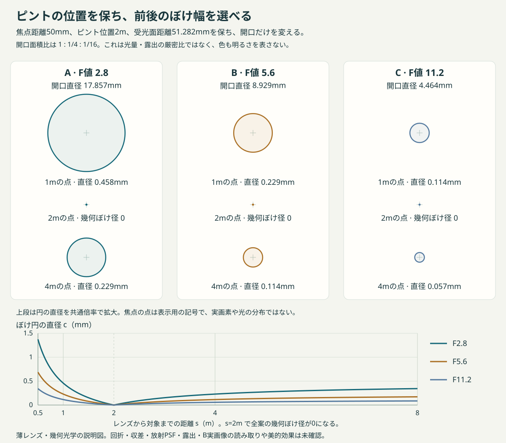
しくみ
ピントの位置では、開口の別々の場所を通った光線が同じ点に集まる。その手前や奥の点はセンサー上で広がる。理想的な薄レンズの条件で、開口の直径を半分にすると、この広がりの直径も半分になる。全ての対象へ同じカメラ条件を適用する。
具体例
焦点距離50mm、合焦対象まで2mを固定し、F値2.8、5.6、11.2を比べる。1mにある点のぼけ径は約0.458、0.229、0.114mm、4mにある点は約0.229、0.114、0.057mmとなる。2mの点では、どの案も幾何学的ぼけ径が0になる。これはセンサー上の長さの比較で、説明図の円は拡大表示している。
確認範囲
当該改善時の記録：独立した光線行列と70桁の数値計算で735光線・15ケース・903深度値を照合した。モデルの定義域外12例と、符号・直径と半径・画素換算などを壊した8例を検査が拒否した。説明図の6つの幾何円、3つの焦点表示、903曲線点を照合し、1200×1050画像を画素検査と目視で確認した。仕様143規則と既存295テストが通過。配布検証器と単一の参考設計コードは変更していない。
制約：円形開口を持つ理想的な薄い近軸レンズの幾何モデルに限る。ピント位置のゼロ径は現実の無限解像を意味せず、ぼけ円は光量分布や実際の鮮鋭度を示さない。開口面積の比は明るさ・露出の厳密比ではなく、露出補償も追加しない。固定されたカメラ・合焦・形状・接触・材質・露出を優先する。回折、収差、遮蔽境界の正しいぼけ合成、B画像生成、実画像の読み取り・美的効果は未確認。
GitHubの変更
明暗のつながりを比較する方法
既存色面の値・面積だけでなく、明暗群の辺接続と分離関係を選ぶ。
しくみ・具体例・確認範囲を見る
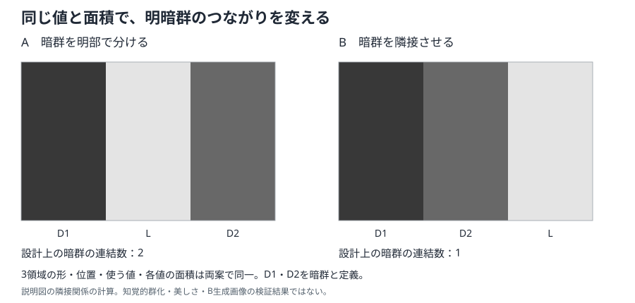
しくみ
同じ色の量でも、どの既存領域へ割り当てるかで群のつながりは変わる。明暗群を辺で接続する関係として扱い、色量の調整と接続関係の選択を分ける。
具体例
形と位置を固定した同面積3領域に同じ3色を割り当て、濃色が分離するD1-L-D2と接続するD1-D2-Lを比べる。
確認範囲
当該改善時の記録：教育図の領域形状・色・各色面積と、明暗群の辺接続を確認した。知覚的な群化の測定はしていない。
制約：辺接続数は設計上の定義で、知覚測定ではない。一般画像に二値化や全暗部統合を課さず、美的効果は未確認。
GitHubの変更
円形領域を巡る光の模様の構成
既に時間変化が許された円形の発光部で、形を動かさずに、明暗の模様が巡る向きと速さを選べる。未指定の強度変調を具体化する方法で、円や光源を追加するものではない。
しくみ・具体例・確認範囲を見る
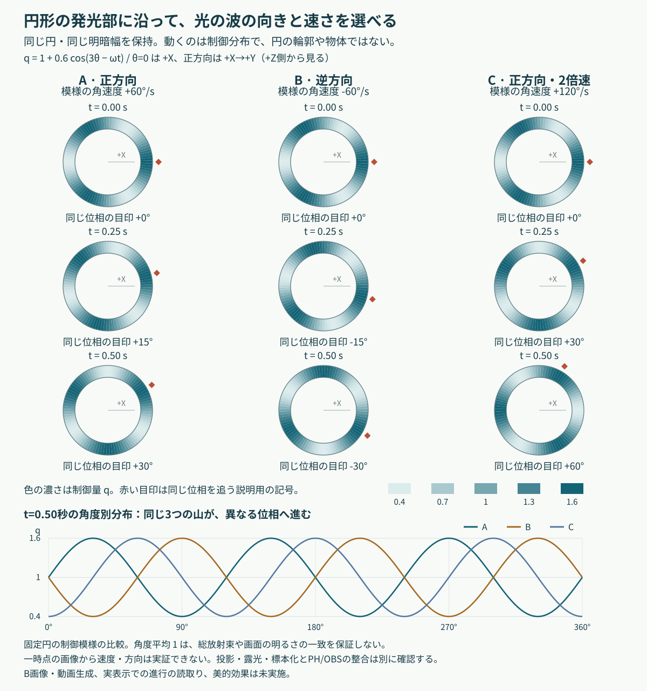
しくみ
円周上の場所と時刻を一つの周期式で結び、同じ明暗分布が時間とともにずれるようにする。時間側の位相の符号を変えると向きが反転し、変化率を2倍にすると模様の進み方も2倍になる。輪郭や物質の回転と、制御分布の移動を区別する。
具体例
同じ固定円に3つの山を持つ分布を置き、強度に掛ける無次元制御量の範囲を0.4〜1.6に保つ。Aは正方向60°/秒、Bは逆方向60°/秒、Cは正方向120°/秒。開始時点の分布は3案とも同じで、0°から追う位相は0.5秒後に+30°、−30°、+60°へ進む。
確認範囲
当該改善時の記録：独立した複素位相の計算で2,592点の制御値と変化率、81の位相位置、1,083曲線点を照合した。時間・空間の粗い標本が別の進行模様と一致する900組の診断も確認。不正パラメータ18例と破損8例を検査が拒否した。説明図の9円・864区間・9つの説明用位相記号と3曲線を照合し、1200×1280画像を画素検査と目視で確認した。仕様143規則と既存295テストが通過。
制約：理想的な一つの周期制御場の構成例で、媒体の物理波動や発光効率の証明ではない。角度平均が同じでも総放射束・露出・見た目の明るさは保証しない。固定された発光・形・内部法則・時間区間を優先し、世界内発光なら既存の照明・反射にも反映する。一時点の画像から進行方向や速さは実証できない。投影・遮蔽・露光・表示の標本化、B画像・動画生成、実際の読取りと美的効果は未確認。
GitHubの変更
VFXと選択済み投影集合の条件整理
VFXの世界内レイヤーに関する記述を、基底の選択済みProjectionSetへ合わせた。
しくみ・具体例・確認範囲を見る
しくみ
通常の単一投影を保ちながら、明示的に許された複数投影では同じ世界内の対象・個数・接触を各投影へ対応させる。レイヤーごとに無断で別カメラを使う許可ではない。
確認範囲
当該改善時の4構造例と297件の回帰テストが通過した。構造例は修正前も想定どおり通っており、今回は規範的記述の衝突を整理した。実画像・美的効果は未確認。
GitHubの変更
重み分布に基づく配置候補
既存balance_symmetry軸で、配置の重み付き中心と符号付き偏りを候補比較に使う。
しくみ・具体例・確認範囲を見る
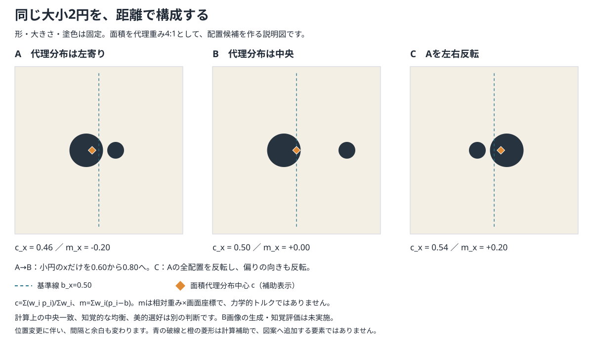
しくみ
相対重みwと位置pから、分布中心c=Σ(wp)/Σwと基準点からの符号付き偏りを計算する。重い側を近く、軽い側を遠くへ置くなど、位置と距離の候補を作る補助に使う。
具体例
半径0.10/0.05の同色円に面積比の代理重み4:1を置く。大円のx=0.425を保ち小円を0.60→0.80へ動かすと、分布中心xは0.46→0.50になる。元の配置を左右反転すれば0.54になり、偏りを残す案も選べる。
確認範囲
当該改善時の記録：図の座標から分布中心0.46 / 0.50 / 0.54を確認。形・色・非重複・余白と、実描画した説明図を点検した。
制約：proxyは知覚的重さや物理質量ではなく、中心一致も美しさの証明ではない。配置で間隔・余白も変わるため、B画像と美的効果は未確認。
GitHubの変更
仕様テンプレートと重複メタデータの検査
壊れたテンプレートの章診断と、空値を含む規則メタデータの重複検出を追加した。
しくみ・具体例・確認範囲を見る
しくみ
翻訳前の正本の構造を検査し、重複した定義の後勝ちによる見落としを防ぐ。関連する外部担当の単一コード化修正そのものは、この報告の成果へ含めない。
確認範囲
当該改善時の記録では、回帰テスト251件が通過し、GitHubへの反映を確認した。今回その時点の全試験を再実行したという意味ではない。構造検査・仕様保守の成果で、実生成画像や美的効果の確認ではない。
GitHubの変更
複数キーワード展開の個別検査
複数の完全一致展開を配列として保持し、各項目の義務を個別に検査するようにした。
しくみ・具体例・確認範囲を見る
しくみ
一つの文字列へ連結して個別条件を回避しない。各展開を適用しつつ、共有する対象範囲と単一・集合の違いを保つ。
確認範囲
当該改善時の記録では、回帰テスト225件が通過し、GitHubへの反映を確認した。今回その時点の全試験を再実行したという意味ではない。構造検査・仕様保守の成果で、実生成画像や美的効果の確認ではない。
GitHubの変更
コンパイル状態と投影の網羅検査
コンパイルの状態に応じた条件と、投影が必要な対象を覆う条件を整理した。
しくみ・具体例・確認範囲を見る
しくみ
処理の準備・完了・根拠を区別し、投影集合の対象範囲を照合する。構造上の網羅は実画像での可視性や品質とは別である。
確認範囲
当該改善時の記録では、回帰テスト151件が通過し、GitHubへの反映を確認した。今回その時点の全試験を再実行したという意味ではない。構造検査・仕様保守の成果で、実生成画像や美的効果の確認ではない。
GitHubの変更
OBS依存グラフと意味照合の反例
OBSの依存グラフを反復処理で検査し、意味照合の反例を文書化した。
しくみ・具体例・確認範囲を見る
しくみ
参照の存在と依存の循環を分けて検査する。構造検査を通る入力でも意味の妥当性は別に照合する。
確認範囲
当該改善時の記録では、回帰テスト191件が通過し、GitHubへの反映を確認した。今回その時点の全試験を再実行したという意味ではない。構造検査・仕様保守の成果で、実生成画像や美的効果の確認ではない。
GitHubの変更
描画対象参照とUnicode診断
画面上の描画対象への型付き参照と、CLIの日本語・Unicode出力を改善した。
しくみ・具体例・確認範囲を見る
しくみ
対象の種類に合う参照だけを許し、診断の文字を失わず伝える。文書の入口も現行版と履歴へ分けた。
確認範囲
当該改善時の記録では、回帰テスト203件が通過し、GitHubへの反映を確認した。今回その時点の全試験を再実行したという意味ではない。構造検査・仕様保守の成果で、実生成画像や美的効果の確認ではない。
GitHubの変更
pointerの配列添字検査
配列へのpointerで範囲外や不正な添字を通常の未解決診断として扱うようにした。
しくみ・具体例・確認範囲を見る
しくみ
実装例外を漏らさず境界を検査する。既存の十進トークンの扱いは保ち、別の参照形式へ勝手に変えない。
確認範囲
当該改善時の記録では、回帰テスト244件が通過し、GitHubへの反映を確認した。今回その時点の全試験を再実行したという意味ではない。構造検査・仕様保守の成果で、実生成画像や美的効果の確認ではない。
GitHubの変更
JSON APIの型・深さ・循環検査
直接APIへ渡す値を正準JSONの型に限定し、深さや循環を検査するようにした。
しくみ・具体例・確認範囲を見る
しくみ
暗黙の型変換で不正入力を受理せず、循環参照と共有部分を持つ非循環構造を区別する。
確認範囲
当該改善時の記録では、回帰テスト181件が通過し、GitHubへの反映を確認した。今回その時点の全試験を再実行したという意味ではない。構造検査・仕様保守の成果で、実生成画像や美的効果の確認ではない。
GitHubの変更
PostEffectsと単一光条の条件整理
通常のPostEffects指定と、f1の単一光条に集団用LDMを不要とする条件を整理した。
しくみ・具体例・確認範囲を見る
しくみ
個体に必要な条件と集合に必要な条件を分け、選択していない集合設計を単一効果へ強制しない。
確認範囲
当該改善時の記録では、回帰テスト186件が通過し、GitHubへの反映を確認した。今回その時点の全試験を再実行したという意味ではない。構造検査・仕様保守の成果で、実生成画像や美的効果の確認ではない。
GitHubの変更
記述型・予約参照・表示上の受入条件
説明文の型、正準ルートの予約、表示だけに関する受入条件を明確にした。
しくみ・具体例・確認範囲を見る
しくみ
文章と識別子の役割を分け、参照ルートと登録対象の衝突を防ぐ。表示上の確認を世界内の物理検証へ置き換えない。
確認範囲
当該改善時の記録では、回帰テスト156件が通過し、GitHubへの反映を確認した。今回その時点の全試験を再実行したという意味ではない。構造検査・仕様保守の成果で、実生成画像や美的効果の確認ではない。
GitHubの変更
共通参照定義と根拠の鮮度
共通の契約参照を整理し、現行版の準備状態と根拠の鮮度を照合する条件を明確にした。
しくみ・具体例・確認範囲を見る
しくみ
版が変わった後に古い確認済み状態をそのまま使わず、依存した変更と再確認が必要な根拠を結びつける。
確認範囲
当該改善時の記録では、回帰テスト195件が通過し、GitHubへの反映を確認した。今回その時点の全試験を再実行したという意味ではない。構造検査・仕様保守の成果で、実生成画像や美的効果の確認ではない。
GitHubの変更
B-Expression-3への統合
構図・描写・色・魔法の共同設計と、Entity・PH・OBSを分ける表現形式を導入した。
しくみ・具体例・確認範囲を見る
しくみ
対象そのもの、世界内の現象、観測・表示処理を区別し、目的に合うモデルと必要な領域の詳細だけを扱う。凍結したB-Expression-2の互換形式は維持する。
確認範囲
当該改善時の記録では、回帰テスト148件が通過し、GitHubへの反映を確認した。今回その時点の全試験を再実行したという意味ではない。構造検査・仕様保守の成果で、実生成画像や美的効果の確認ではない。
GitHubの変更
UTF-8 BOMと数値範囲の取扱い
先頭のBOMを一つ許容し、非有限になる数値を明示的に拒否するようにした。
しくみ・具体例・確認範囲を見る
しくみ
入力の文字コード処理と数値の実装範囲を分ける。本文内の文字は勝手に除去せず、整数の精度も保つ。
確認範囲
当該改善時の記録では、回帰テスト175件が通過し、GitHubへの反映を確認した。今回その時点の全試験を再実行したという意味ではない。構造検査・仕様保守の成果で、実生成画像や美的効果の確認ではない。
GitHubの変更
例外規則とYAMLの一貫した解釈
exception_toの参照先解決、単一値YAMLの共通処理、テンプレートの重複検出を整えた。
しくみ・具体例・確認範囲を見る
しくみ
例外が何を対象にするかを明示し、正本とコンパイラで同じメタデータを保つ。曖昧な重複定義を受理しない。
確認範囲
当該改善時の記録では、回帰テスト263件が通過し、GitHubへの反映を確認した。今回その時点の全試験を再実行したという意味ではない。構造検査・仕様保守の成果で、実生成画像や美的効果の確認ではない。
GitHubの変更
検証中の契約と参照解決の分離
一回の検証で使う契約のスナップショットと、参照解決の再構築を独立させた。
しくみ・具体例・確認範囲を見る
しくみ
途中で変化する共有状態を検証の根拠へ混ぜず、呼出しごとの入力と契約から解決する。
確認範囲
当該改善時の記録では、回帰テスト163件が通過し、GitHubへの反映を確認した。今回その時点の全試験を再実行したという意味ではない。構造検査・仕様保守の成果で、実生成画像や美的効果の確認ではない。
GitHubの変更
拡張選択APIの明示エラー
未知の拡張名や不正な選択コンテナを、APIの明示エラーとして返すようにした。
しくみ・具体例・確認範囲を見る
しくみ
対応する拡張名の定義を共有し、選択肢の誤りを黙って無視したり別形式へ変換したりしない。
確認範囲
当該改善時の記録では、回帰テスト209件が通過し、GitHubへの反映を確認した。今回その時点の全試験を再実行したという意味ではない。構造検査・仕様保守の成果で、実生成画像や美的効果の確認ではない。
GitHubの変更
Python型注釈の非実行構文
生成コードのprompt注釈として扱う構文を、実行しない形式へ限定した。
しくみ・具体例・確認範囲を見る
しくみ
Pythonコードを実行せず構文木として読む。注釈内の呼出しや属性アクセスを、単なる型名や文字列と同一視しない。
確認範囲
当該改善時の記録では、回帰テスト166件が通過し、GitHubへの反映を確認した。今回その時点の全試験を再実行したという意味ではない。構造検査・仕様保守の成果で、実生成画像や美的効果の確認ではない。
GitHubの変更
モジュール内パスの依存検査
モジュールの一部を指す参照も、モジュール間の先行関係へ対応させた。
しくみ・具体例・確認範囲を見る
しくみ
参照先が存在するだけで処理順序を満たしたとせず、実際の生成元モジュールへ依存辺を結ぶ。
確認範囲
当該改善時の記録では、回帰テスト231件が通過し、GitHubへの反映を確認した。今回その時点の全試験を再実行したという意味ではない。構造検査・仕様保守の成果で、実生成画像や美的効果の確認ではない。
GitHubの変更
コンパイル前の正本検査
コンパイル前に正本全体を検査し、activation参照の不正な型を通常の診断へ変えた。
しくみ・具体例・確認範囲を見る
しくみ
正本が不正な場合は出力前に止まり、失敗途中の契約を保存しない。B2の凍結経路と既存の配布コードは保つ。
確認範囲
当該改善時の記録では、回帰テスト273件が通過し、GitHubへの反映を確認した。今回その時点の全試験を再実行したという意味ではない。構造検査・仕様保守の成果で、実生成画像や美的効果の確認ではない。
GitHubの変更
パスに似た登録IDの保護
モジュールのパスに似ている登録IDを、先行関係と誤認しないようにした。
しくみ・具体例・確認範囲を見る
しくみ
表記の形だけで参照の意味を決めず、登録済みIDを解決してから依存関係を扱う。
確認範囲
当該改善時の記録では、回帰テスト232件が通過し、GitHubへの反映を確認した。今回その時点の全試験を再実行したという意味ではない。構造検査・仕様保守の成果で、実生成画像や美的効果の確認ではない。
GitHubの変更
汎用参照と識別子の名前空間
B3の汎用参照をpointer優先に整理し、識別子専用欄の値をそのまま保つようにした。
しくみ・具体例・確認範囲を見る
しくみ
参照表現と文字列IDを区別する。旧データで名前が衝突する場合は移行監査を行い、自動的な読み替えを避ける。
確認範囲
当該改善時の記録では、回帰テスト238件が通過し、GitHubへの反映を確認した。今回その時点の全試験を再実行したという意味ではない。構造検査・仕様保守の成果で、実生成画像や美的効果の確認ではない。
GitHubの変更
制作上の必要性に基づく掲載内容の整理
通常のギャラリーを、ユーザーが制作でぜひ知るべきこのチャットの改善だけに絞り、日別ページを廃止した。
しくみ・具体例・確認範囲を見る
しくみ
制作上の具体的な必要性と、内部の仕様保守・検査を区別する。必要性がない成果を見出しだけ言い換えて通常表示へ戻さない。後の指示により、内部報告は任意の全報告モードから読める。
確認範囲
整理時に通常表示を0件とし、公開7URLの本文と削除22URLを確認した。当時の検査結果であり、今回の全報告モードの媒体復帰は別に検証する。
GitHubの変更
B制作ギャラリーの公開
このチャットの改善報告を読むためのGitHub Pagesギャラリーを作成した。
しくみ・具体例・確認範囲を見る
しくみ
報告の構造化データからページを生成し、作品上の説明と原理・例・確認範囲を結びつけた。初期の日別形式は後のユーザー指示で廃止し、現在は一つのページへまとめている。
確認範囲
当時の公開commitと公開本文・媒体を照合した。公開方式の整備であり、B作品自体の表現改善を示すものではない。
GitHubの変更
ギャラリーのタブ・ブックマーク用アイコン
B制作ギャラリーのfaviconとApple用アイコンを変更した。
しくみ・具体例・確認範囲を見る
しくみ
小さいタブ表示、ブックマーク、ホーム画面用にそれぞれ対応する形式と寸法のアイコンを配信する。
確認範囲
公開されたSVG・ICO・PNGの実バイトとMIMEを確認した。今回のモード切替でも3アイコンの元バイトを維持する。
GitHubの変更
現在、制作でぜひ知っておくべき掲載内容はありません。これまでの改善は「すべての報告」で読めます。